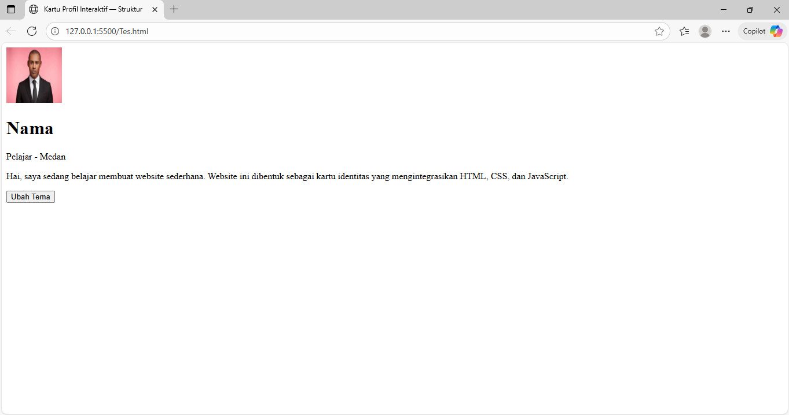
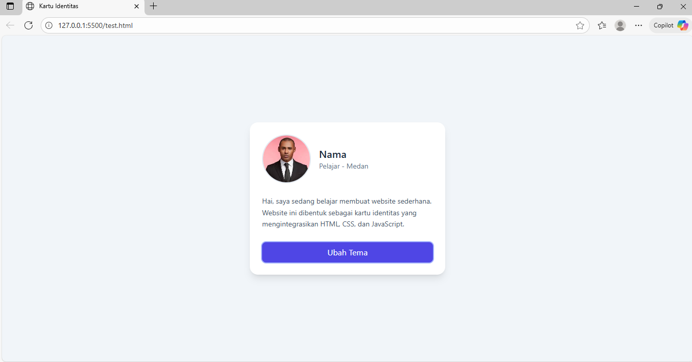
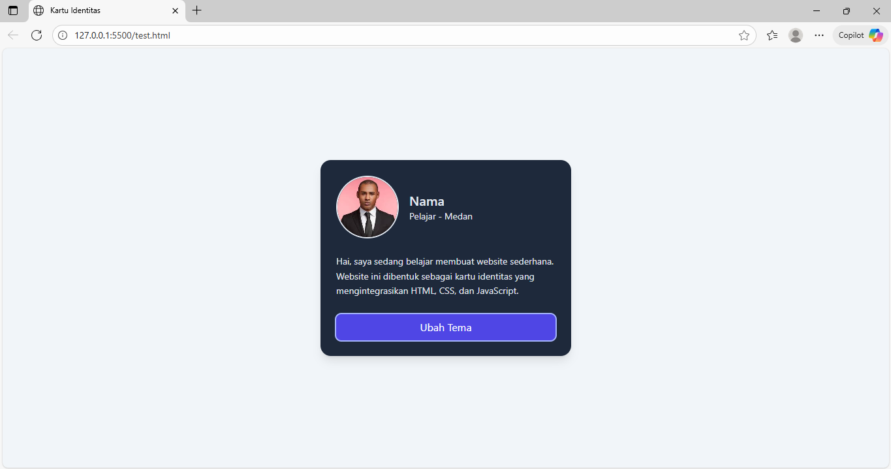

Biodata
Jonaldy Bensharon Simamora
- NIM
- 241401074
- KOM
- B
- Alamat
- Jl. Mekar, Deli Serdang, Sumatera Utara

Tentang Saya
Hai! Perkenalkan nama saya adalah Jonaldy Bensharon Simamora. Saya merupakan seorang mahasiswa yang belajar di Universitas Sumatera Utara (USU) dengan program studi Ilmu Komputer. Saat ini, saya sedang menjalani semester ketiga dari program studi tersebut. Laman website ini ditujukan sebagai media pembelajaran awal saya dalam kelas Pemrograman Web.
Motivasi saya dalam memilih Ilmu Komputer sebagai program studi saya, yaitu keinginan untuk berkarir secara profesional dalam bidang pemrograman dan ikut berkontribusi dalam meningkatkan kemajuan teknologi serta menyelesaikan permasalahan di berbagai aspek kehidupan masyarakat.
Deskripsi
Di luar kegiatan pembelajaran, saya cukup rutin membaca. Saya tidak banyak memilih bahan bacaan saya sehingga saya akan membaca apa pun dan dari mana pun jika memungkinkan. Namun, saya mendapati diri saya seringkali singgah pada berbagai forum atau media diskusi untuk melihat berita dan cerita, menemukan apa yang sebenarnya terjadi pada dunia dan penghuninya. Dari kegiatan tersebut, saya merasa bahwa membaca adalah karunia. Mengenali pikiran dan ide dari masa lampau, mengetahui cara khalayak dari berbagai kalangan untuk beradaptasi, serta memahami bahwa setiap kisah dapat terkesan berbeda berdasarkan sudut pandang naratornya. Kemampuan itu sungguh merupakan sebuah keajaiban.
Berdasarkan pengalaman dalam membaca, saya mendapati suatu kutipan yang terasa layak diucapkan oleh setiap orang.
"Ad Maiora Natus Sum"
'Aku dilahirkan untuk hal-hal yang besar'
Saya cukup meyakini bahwa setiap orang memiliki perannya masing-masing dalam dunia. Kisah manusia yang terkesan tidak signifikan sekali pun memiliki caranya sendiri untuk memengaruhi sejarah dan membentuk semesta. Oleh sebab itu, setiap orang hadir dalam kehidupan ini untuk tujuan yang besar.
Jadwal Perkuliahan
| Hari | Waktu | Mata Kuliah | Ruangan | Dosen Pengampu | Pengajar |
|---|---|---|---|---|---|
| Senin | 10.30 - 12.10 | Desain Interaksi | C-101 | Fanindia Purnamasari, S.TI., M.IT. | |
| 13.50 - 15.30 | Basic Listening | Lab. Bahasa | Dr. Rusdi Noor Rosa, S.S., M.Hum. | ||
| Selasa | 08.50 - 10.30 | IELTS Preparation | D-101 | Drs. Yulianus Harefa, GradDipEd TESOL., MEd TESOL | |
| 13.00 - 14.30 | Praktikum Basis Data | Lab. Pemrograman 1 | Dr. Dewi Sartika Br Ginting, S.Kom., M.Kom. | Diva Syakirahana | |
| Rabu | 10.30 - 13.00 | Basis Data | D-106 |
Dr. Dewi Sartika Br Ginting, S.Kom., M.Kom. Insidini Fawwaz, M.Kom. |
|
| 13.50 - 15.30 | Wirausaha Digital | D-101 |
Dr. T. Henny Febriana Harumy, S.Kom., M.Kom. Dr. Fauzan Nurahmadi, S.Kom., M.Cs. |
||
| Kamis | 08.00 - 10.30 | Struktur Data | D-105 |
Anandhini Medianty Nababan, S.Kom., M.T. Insidini Fawwaz, M.Kom. |
|
| 10.30 - 13.00 | Pemrograman Web | D-105 |
Dr. Dewi Sartika Br Ginting, S.Kom., M.Kom. Nurrahmadayeni, M.Kom. |
||
| 13.00 - 15.30 | Kecerdasan Buatan | D-101 |
Prof. Drs. Poltak Sihombing, M.Kom., Ph.D Dr. Amalia, S.T., M.T. |
||
| Jumat | 08.00 - 09.40 | Praktikum Pemrograman Web | Lab. Pemrograman 3 | Dr. Dewi Sartika Br Ginting, S.Kom., M.Kom. | Rizky Berutu |
| 10.30 - 12.10 | Praktikum Struktur Data | Lab. Pemrograman 1 | Anandhini Medianty Nababan, S.Kom., M.T. | Harry Tamara | |
Pengenalan Web
Sebelum membahas tentang kegiatan pemrograman Web, mari kita mengulik secara ringkas apa itu web sebenarnya dan bagaimana cara kerjanya.
World Wide Web (WWW)
World Wide Web (WWW), sering disebut secara umum sebagai web, merupakan suatu sistem yang berisikan kumpulan halaman/file yang saling berhubungan melalui tautan (hyperlink) dan dapat diakses melalui internet. Halaman-halaman tersebut saling terhubung membentuk jaring raksasa sehingga layanan yang berjalan di atas internet ini dinamakan web (jaring). Setiap halaman web berisikan satu dokumen HTML yang dapat ditampilkan oleh browser.
Sekumpulan halaman web yang saling terhubung dan dikelola di satu tempat (server) yang sama dapat disebut sebagai situs web (website). Satu website dapat terdiri atas satu atau beberapa halaman web.
Sebagai contoh:
- https://wikipedia.org/ merupakan situs web yang berisikan beberapa halaman web.
- https://wikipedia.org/gajah merupakan suatu halaman web pada situs tersebut.
Uniform Search Locator (URL)
Uniform Search Locator (URL) merupakan alamat lengkap dari halaman, file, gambar, atau sumber lainnya di web. URL dapat memberitahu browser mengenai cara berkomunikasi dengan server, nama website, serta lokasi file di server.
Misalkan, terdapat URL:
https://perabotmu.com/katalog/produk.html?id=50#keteranganBagian-bagian dari URL tersebut, yaitu:
https://→ protokol atau cara browser berkomunikasi dengan server yang menyimpan halaman web.perabotmu.com→ nama domain atau website yang dituju.katalog/produk.html→ path atau lokasi file di dalam server.?id=50→ query atau parameter yang dikirim ke server, misalnya meminta produk nomor 50.#keterangan→ fragment atau bagian halaman web yang dituju.
HTTP/HTTPS
Hyper Text Transfer Protocol (HTTP) merupakan protokol yang mengatur bagaimana browser dan server berinteraksi untuk kegiatan meminta atau mengirim halaman. HTTP akan mengatur format pesan permintaan (request) dan balasan (response).
Contoh sederhananya, yaitu:
- Browser mengirim HTTP request: Berikan saya isi dari /katalog/produk.html
- Server memberikan HTTP response: Berikut merupakan isi dari /katalog/produk.html
HTTPS merupakan versi HTTP dengan keamanan yang lebih tinggi. HTTPS mengenkripsi komunikasi agar pihak ketiga tidak bisa mengubah data yang diminta dan dikirimkan.
IP Address dan Domain
Di dalam web, terdapat dua jenis entitas, yaitu:
- Klien — perangkat pengguna seperti komputer, handphone, atau browser. Klien meminta layanan atau informasi dari komputer lain.
- Server — komputer khusus yang menyediakan informasi atau layanan. Server dapat berisikan beberapa situs web dan memberikan layanan kepada klien yang memintanya.
Komputer (server) mendiami suatu alamat pada jaringan web berupa rangkaian angka unik yang digunakan untuk berinteraksi dengan komputer lain. Contoh IP address dengan format IPv4: 203.0.113.5.
Karena penggunaan alamat numerik sulit diingat, domain digunakan sebagai nama unik yang lebih mudah dikenali oleh manusia.
Misalkan:
- Alamat IP = 203.0.113.5
- Domain = katalogmu.com
Namun, komputer tidak mengerti alamat yang tidak dalam bentuk numerik. Untuk menangani hal ini, Domain Name System (DNS) digunakan sebagai ensiklopedia alamat di internet yang menerjemahkan nama domain menjadi alamat IP.
Secara sederhana, alur akses alamat pada web adalah sebagai berikut:
- Pengguna mencari situs web di browser dengan memasukkan domain, misalnya
www.katalogmu.com. - Browser bertanya pada DNS server, apa alamat IP dari domain tersebut.
- DNS memberikan alamat IP, misalnya
203.0.113.5. - Browser menghubungi server pada alamat tersebut untuk meminta file HTML.
- Server mengirim file HTML tersebut.
- Browser membaca file HTML dan menampilkannya sebagai halaman web yang dapat dibaca manusia.
Browser
Browser merupakan program yang digunakan untuk menjelajahi jaringan internet. Browser dapat mengakses halaman web dan menampilkan isi halaman tersebut dalam bentuk yang dapat dipahami oleh manusia.
Browser memiliki tiga tugas utama, yaitu:
- Fetch — mengambil informasi seperti halaman web atau gambar dari server.
- Interpret — menafsirkan file HTML, CSS, JavaScript, dan lainnya.
- Render — menampilkan konten tersebut sebagai halaman interaktif yang dapat dipahami manusia.
Secara umum, alur pencarian konten pada browser adalah sebagai berikut:
- Pengguna memasukkan konten yang ingin dicari dalam kolom penelusuran browser.
- Browser mengecek apakah input berupa URL lengkap atau kata kunci pencarian.
- Jika hanya kata kunci, browser mengirimkannya ke mesin pencari.
- Mesin pencari mencari halaman-halaman web yang mengandung kata kunci tersebut.
- Mesin pencari menampilkan hasil situs web yang relevan.
- Ketika pengguna mengklik hasil, browser bertanya ke DNS untuk menerjemahkan domain ke IP.
- DNS mengembalikan alamat IP ke browser.
- Browser mengirim permintaan HTTP/HTTPS ke server terkait.
- Server mengirim file HTML sebagai respons.
- Browser membaca HTML dan memuat CSS, JS, serta aset lain.
- Browser membangun Document Object Model (DOM) dan menampilkan halaman tersebut ke pengguna.
Pengenalan HTML, CSS, Javascript, dan Tailwind CSS
HTML
Pengenalan HTML
Berdasarkan pembahasan sebelumnya, diketahui bahwa web terdiri atas halaman-halaman informasi yang dapat diakses melalui browser. Namun, browser tidak dapat menebak bagaimana isi suatu halaman ditampilkan kepada pengguna (klien). Browser membutuhkan petunjuk yang menyatakan aturan penampilan konten. Petunjuk ini diberikan oleh HTML.
Hyper Text Markup Language (HTML) merupakan bahasa penanda (markup) yang digunakan untuk memberikan struktur, makna, dan hubungan antarbagian dalam sebuah halaman web. Jika halaman web diibaratkan sebagai rumah, HTML merupakan pondasi atau struktur dari rumah tersebut. HTML menentukan apa saja yang ada di rumah (halaman web) dan bagaimana hubungannya.
HTML merupakan bahasa markup (penanda) yang berbeda dengan bahasa pemrograman umum yang memiliki konsep perhitungan dan pengaturan logika jalanya program. HTML digunakan untuk menyusun struktur dan isi dari suatu halaman. Istilah markup berasal dari dunia percetakan tradisional. Sebelum adanya komputer, editor naskah akan menandai bagian-bagian tertentu dengan tinta merah atau tanda tertentu untuk memberitahukan bagian yang harus dicetak tebal, bagian yang menjadi judul, bagian yang menjadi paragraf baru, dan memberikan aturan percetakan lainnya. Ketika komputer digunakan pada bidang penerbitan, konsep markup (penanda) tetap digunakan melalui kode berbentuk tag yang membungkus teks. Maka, markup dapat diartikan sebagai cara memberi makna pada teks agar komputer mengetahui bagaiman cara menampilkannya dengan benar.
Contoh markup sederhana, yaitu
<p>Ini adalah sebuah paragraf</p>
Ketika pengguna (klien) mengakses situs, server mengirim file berisi teks HTML ke browser. Browser akan bekerja sebagai penerjemah dengan membaca file itu secara berurutan, mengenali setiap tag, lalu menyusunnya menjadi tampilan visual yang dapat dimengerti oleh manusia.
Meskipun banyak teknologi baru bermunculan, HTML tetap menjadi fondasi utama semua halaman web. Hal ini dikarenakan sebagian besar browser di dunia mengenali HTML. HTML memiliki berbagai fitur yang memungkinkan pengguna difabel dalam memahami halaman web serta meningkatkan kinerja Search Engine Optimization (SEO). Selain itu, HTML memiliki konsep dasar yang sama, meskipun terus berevolusi dari waktu ke waktu sehingga mudah diterapkan.
Struktur Dasar HTML
Setiap halaman web memiliki struktur dasar yang sama, meskipun isi kontenya berbeda. Kerangka minimal dari suatu dokumen HTML dapat dinyatakan sebagai berikut.
<!DOCTYPE html>
<html>
<head>
<title>Judul Halaman</title>
</head>
<body>
<h1>Halo dunia!</h1>
</body>
</html>
Pada HTML, tag merupakan penanda/label yang memberi tahu browser bagaimana memperlakukan atau memberi makna pada teks yang ada di dalamnya. HTML dibangun oleh elemen-elemen yang mengatur penyusunan konten halaman. Elemen terdiri dari tag pembuka, isi, dan tag penutup. Pada kode sumber sebelumnya, terdapat baris kode seperti berikut.
<h1>Halo dunia!</h1>
Baris ini memberitahu browser untuk menampilkan teks "Halo dunia!" sebagai judul utama dari halaman web.
- <p> merupakan tag pembuka yang menandai awal dari judul utama.
- </p> merupakan tag penutup yang menandai akhir dari judul utama.
- "Halo dunia!" merupakan isi yang yang diatur menjadi judul utama oleh tag tersebut.
Elemen-elemen dasar pada dokumen HTML, yaitu:
-
<!DOCTYPE html>
Baris ini merupakan deklarasi tipe dokumen yang bertujuan memberi tahu browser bahwa dokumen yang ditulis menggunakan format HTML versi modern (HTML5). Elemen ini bukan bagian dari isi halaman sehingga tidak ditampilkan ke layar pengguna. Penulisan kode tersebut tidak wajib, tetapi cukup penting untuk diikutsertakan untuk mencegah tampilan yang berbeda pada browser tertentu yang menggunakan format lama secara default. -
<html> ... </html>
Baris ini merupakan deklarasi awal dan akhir dari dokumen HTML. Semua isi serta identitas halaman berada di dalam tag <html> beserta pasangannya. -
<head> ... </head>
Bagian ini merupakan identitas dari halaman web yang tidak ditampilkan sebagai konten dari halaman. Umumnya, head berisi:- <title> ... </title>, yaitu judul dari halaman web yang ditampilkan pada tab browser.
- <meta>, yaitu informasi tambahan yang mengatur bahasa, pengkodean karakter, serta penampilan pada perangkat tertentu.
- <link>, yaitu tautan yang menyambungkan HTML dengan file CSS.
- <script>, yaitu tautan yang menyambungkan HTML dengan file JavaScript.
-
<body> ... </body>
Elemen ini merupakan bagian inti dari halaman web yang berupa konten yang terlihat pada layar pengguna. Di dalam <body>, pemrogram dapat menulis teks, gambar, tautan, daftar, tabel, dan elemen-elemen lainnya yang perlu ditampilkan pada layar.
CSS
Pengenalan CSS
Cascading Style Sheets (CSS) merupakan bahasa yang digunakan untuk mengatur tampilan visual halaman web, baik itu warna, ukuran font, jarak, tata letak, latar belakang, dan elemen visual lainnya. Jika halaman web diibaratkan sebagai rumah dan HTML merupakan fondasi atau struktur dari rumah tersebut, CSS merupakan cat, furnitur, tata letak, serta hiasan yang membuat rumah terlihat rapi dan menarik. CSS mengatur bagaimana isi yang dinyatakan pada HTML diperlihatkan kepada pengguna.
Sebelum adanya CSS, pengaturan tampilan dilakukan langsung di HTML melalui atribut style yang menyebabkan kode sulit diorganisasi dan tidak fleksibel. Penggunaan CSS memiliki keunggulan, yaitu meningkatkan efektivitas penyusunan struktur dan pengaturan tampilan layar dengan memisahkan dokumen yang berisi struktur di HTML dan tampilan di CSS. Selain itu, CSS memungkinkan pengaturan banyak elemen sekaligus yang meningkatkan efisiensi waktu.
Struktur Dasar CSS
Secara umum, pengaturan tampilan menggunakan CSS dibentuk melalui struktur berikut.
selector {
property: value;
}
Komponen-komponen dasar dari CSS tersebut, yaitu:
- Selector, yang digunakan untuk memilih elemen HTML yang akan diberi gaya.
- Property, yaitu atribut visual yang ingin diatur. Contohnya: color, font-size, dll.
- Value, yaitu nilai dari property tersebut.
Metode Implementasi CSS pada HTML
-
Inline CSS
Pada metode ini, CSS langsung diterapkan pada atribut elemen HTML yang akan diberi gaya. Metode ini umumnya digunakan bila hanya ada satu atau beberapa elemen yang perlu diatur tampilannya secara cepat. Metode ini jarang digunakan karena sulit diorganisasi serta menutup pemisahan konten/tampilan. Contoh penerapannya adalah sebagai berikut.
<p style="color: blue;">Teks pada paragraf ini berwarna merah.</p>Untuk dapat diterapkan, atribut style perlu disertakan pada tag pembuka pada elemen yang ingin diberi gaya dan diikuti dengan tanda sama dengan (=), lalu property dan value diapit oleh tanda petik dua ("...").
-
Internal CSS
Pada metode ini, CSS diterapkan pada bagian head di dokumen HTML yang dibungkus dalam tag <style>. Metode ini umumnya digunakan untuk halaman web dengan konten yang tidak terlalu banyak. Namun, metode ini cukup jarang digunakan bila konten dari halaman web cukup banyak karena proses pengaturan menjadi tidak efektif. Kode untuk struktur (HTML) dengan kode untuk tampilan (CSS) menjadi dipadatkan dalam satu file. Contoh penerapannya adalah sebagai berikut.
<head> <style> p { color: green; } </style> </head> -
Eksternal CSS
Pada metode ini, CSS diterapkan sebagai file terpisah (dengan ekstensi .css) dari dokumen HTML. Metode ini adalah yang paling umum digunakan dalam mengatur tampilan konten karena meningkatkan kebersihan penulisan kode dengan memisahkan file struktur (HTML) dengan file tampilan (CSS) serta memudahkan proses pengorganisasian jika ada perubahan yang dilakukan pada waktu yang akan datang. Contoh penerapannya adalah sebagai berikut.
<head> <link rel="stylesheet" href="styles.css"> </head>Untuk dapat diterapkan, pengaturan gaya pada halaman web dibuat terpisah dalam satu dokumen dengan ekstensi CSS (.css) yang disimpan pada satu folder yang sama dengan file HTML yang ingin diberi gaya. Kemudian, file CSS tersebut dihubungkan pada file HTML melalui tag <link> pada bagian head.
JavaScript
Pengenalan JavaScript
Ketika web pertama kali diperkenalkan (sekitar tahun 1990-an), halaman web berperan seperti brosur yang hanya berisi teks dan gambar yang tidak dinamis. Pengguna hanya bisa melihat informasi, bukan berinteraksi dengan halaman tersebut. Seiring berjalannya waktu, halaman web ditujukan agar pengguna tidak hanya sekadar membaca informasi, tetapi melakukan interaksi dinamis, seperti menggunakan tombol untuk mengirim data, melihat animasi, dan keperluan interaktif lainnya. Bahasa HTML yang mengatur struktur halaman web dan CSS yang mengatur tampilan halaman web tidak dapat melakukan hal tersebut. Hal ini dikarenakan bahasa tersebut tidak sama dengan bahasa pemrograman umum yang memiliki logika untuk mengatur jalannya program. Untuk menangani hal ini, JavaScript diciptakan untuk mendukung proses interaksi pada halaman web.
JavaScript memungkinkan halaman web yang berisi teks dan gambar statis menjadi suatu halaman yang dinamis dan dapat merespons interaksi dari pengguna. Jika halaman web diibaratkan sebagai rumah, JavaScript merupakan sistem yang mengatur operasi yang terjadi dalam rumah tersebut. JavaScript memungkinkan browser menerima input tindakan dari pengguna, mengambil data dari server, lalu mengubah tampilan atau jalannya halaman sebagai respons tanpa harus memuat ulang halaman secara keseluruhan.
Setiap browser modern (seperti Chrome, Firefox, Edge, Safari) memiliki mesin JavaScript bawaan, yaitu semacam otak kecil yang bisa membaca dan menjalankan kode JavaScript pada halaman web, lalu mengubah hasilnya menjadi perilaku nyata di browser. Contohnya, yaitu V8 Engine pada Chrome, SpiderMonkey pada Firefox, serta JavaScriptCore pada Safari.
JavaScript dapat dijalankan dengan dua cara utama, yaitu:
-
Langsung di browser (client-side)
Secara umum, JavaScript merupakan client-side language yang berarti kodenya dijalankan di sisi pengguna. -
Di server (server-side)
Melalui Node.js, JavaScript dapat dijalankan dari server yang menampung situs web.
Metode Implementasi JavaScript pada HTML
-
Inline JavaScript
Pada metode ini, JS langsung diterapkan di dalam tag HTML. Metode ini umumnya digunakan bila hanya ada satu atau beberapa elemen yang perlu diatur secara cepat. Metode ini jarang digunakan karena sulit dikelola dan bercampur dengan kode HTML. Contoh penerapannya adalah sebagai berikut.
<button onclick="alert('Selamat!')">Klik di sini</button>Pada baris kode tersebut:
- Atribut
onclickadalah perintah HTML yang dapat diartikan "ketika tombol ini diklik". - Nilai di dalam atribut tersebut merupakan kode JS yang dijalankan saat tombol ditekan, yaitu
alert('Selamat!').
Untuk dapat diterapkan, atribut dari elemen yang diatur perlu disertakan pada tag pembuka, lalu diikuti property atau value yang diapit oleh tanda petik dua ("...").
- Atribut
-
Internal JavaScript
Pada metode ini, JS diterapkan pada bagian tertentu yang ingin diatur dinamis pada dokumen HTML. Kode JavaScript akan dibungkus dalam tag <script>. Penempatan <script> biasanya dilakukan di bagian bawah <body>, bukan di dalam <head> agar browser dapat memuat semua elemen HTML terlebih dahulu sebelum JavaScript dijalankan. Metode ini umumnya digunakan untuk halaman web dengan konten yang tidak terlalu banyak. Contoh penerapannya adalah sebagai berikut.
<body> <button id="tombol">Klik di sini</button> <script> document.getElementById("tombol").onclick = function() { alert("Selamat!"); }; </script> </body>Browser membaca HTML secara berurutan dari awal hingga akhir sehingga penjalanan kode yang berhubungan dengan pengaturan alur jalannya halaman web diterapkan pada bagian yang tetap untuk mencegah terjadinya error karena ambiguitas penulisan kode. Kode sumber sebelumnya memiliki alur sebagai berikut:
- Browser membaca HTML dan menemukan tombol dengan
id="tombol". - Browser membaca bagian <script> di bawahnya.
- JavaScript mencari tombol tersebut dengan
getElementById("tombol")dan menambahkan perilaku (event handler) ketika tombol diklik. - Saat tombol ditekan pengguna, tampilan "Selamat!" akan muncul.
- Browser membaca HTML dan menemukan tombol dengan
-
Eksternal JavaScript
Pada metode ini, JS diterapkan sebagai file terpisah (dengan ekstensi .js) dari dokumen HTML. Metode ini adalah yang paling umum digunakan dalam mengatur elemen interaktif pada halaman web karena meningkatkan kebersihan penulisan kode dengan memisahkan file struktur (HTML) dengan file JS serta memudahkan proses pengorganisasian jika ada perubahan yang dilakukan pada waktu yang akan datang. Contoh penerapannya adalah sebagai berikut.
Pengaturan elemen interaktif dilakukan dengan membuat file terpisah dari HTML, misalnya
script.js:alert("Selamat Pagi!");Penautan file JS dalam file HTML menggunakan tag <script>:
<body> <h1>Halo Dunia!</h1> <script src="script.js"></script> </body>
Tailwind CSS
Pengenalan Tailwind CSS
Dalam mengatur gaya atau tampilan dari suatu halaman web menggunakan CSS, seringkali pemrogram menghabiskan waktu dalam menulis kode yang cukup banyak untuk memberikan styling yang tidak signifikan. Selain itu, keperluan untuk membuat file terpisah untuk CSS demi menjaga kebersihan kode terkesan merepotkan bagi beberapa pemrogram. Oleh sebab itu, dibentuklah sekumpulan alat bantu atau peraturan siap pakai untuk menulis CSS dengan lebih efisien melalui framework (kerangka kerja).
Untuk melakukan styling pada halaman web, framework Tailwind CSS menyediakan kelas-kelas utilitas kecil yang dapat disusun sendiri untuk membuat tampilan sesuai keinginan. Penggunaan framework ini menjadi populer dikarenakan alasan-alasan berikut.
-
Lebih cepat dalam membangun tampilan
Hal ini dikarenakan pengguna tidak perlu berpindah ke file CSS untuk melakukan penulisan kode. -
Lebih fleksibel
Tailwind CSS tidak memaksa pemrogram untuk mengikuti gaya tertentu, tetapi memberikan kebebasan sesuai dengan kebutuhan. -
Konsisten
Semua kelas pada framework ini sudah punya aturan tersendiri sehingga desain menjadi lebih rapi dan seragam.
Tailwind bekerja dengan menggunakan sekumpulan kelas utilitas yang sudah didefinisikan sebelumnya. Kelas-kelas ini diterapkan langsung pada elemen HTML untuk menentukan tampilannya. Jika dibandingkan dengan menuliskan kode CSS pada file terpisah, penggunaan Tailwind CSS dapat menghemat banyak waktu serta meningkatkan efisiensi penulisan kode. Berikut merupakan perbandingannya.
Penulisan kode CSS pada file terpisah
.btn {
background-color: blue;
color: white;
padding: 8px 16px;
border-radius: 6px;
}
Penulisan kode CSS menggunakan framework pada file HTML
<button class="bg-blue-500 text-white px-4 py-2 rounded-md">
tombol
</button>
Setiap kelas mewakili satu fungsi kecil pada CSS. Pada kode sumber sebelumnya, kelasnya adalah sebagai berikut.
bg-blue-500berfungsi memberi warna latar biru tingkat 500text-whiteberfungsi membuat teks berwarna putihpx-4danpy-2berfungsi memberi jarak dengan border, yaitu 4 untuk horizontal dan 2 untuk vertikalrounded-mdberfungsi membuat sudut elemen agak melengkung
Pengimplementasian Tailwind CSS pada Pemrograman Web
Untuk dapat menggunakan Tailwind CSS, pengguna perlu memasang Node.js dan npm terlebih dahulu pada perangkat mereka. Kemudian, pengguna dapat melakukan penginstalan Tailwind CSS melalui setup produksi. Langkah-langkah pemasangan Tailwind CSS dapat dilihat pada artikel berikut → Tutorial Pemasangan Tailwind CSS
Sintaks Dasar Tailwind CSS
-
Konsep Utility-First
Tailwind CSS menggunakan konsep utility-first, yaitu penggunaan kelas-kelas kecil (utilities) yang masing-masing berfungsi untuk satu tugas spesifik. Kelas-kelas tersebut cukup ditambahkan pada elemen HTML di dalam atribut
class. Contoh penerapannya adalah sebagai berikut.<p class="bg-blue-200 text-red-500 p-4 rounded-lg"> Halo Dunia! </p>Setiap kelas mewakili satu aturan CSS, misalnya
text-red-500memiliki penulisan CSS yang setara dengancolor: #ef4444;. Hal ini berarti kelas tersebut hanya mengatur properti warna teks. -
Struktur Umum Penulisan Tailwind di HTML
Setiap elemen HTML dapat memiliki satu atau lebih utility classes, dipisahkan dengan spasi. Terdapat ratusan kelas kecil pada Tailwind CSS, tetapi semuanya diatur dengan sistem penamaan yang logis dan konsisten agar pengguna dapat dengan mudah menebak nama kelas, tanpa membuka dokumentasi. Struktur dasar dari penulisan Tailwind pada HTML adalah sebagai berikut.
<elemen class="utility1 utility2 ... utilityn">konten</elemen>Setiap kelas memiliki struktur penamaan yang konsisten, biasanya mengikuti pola:
kategori-opsi-nilai.Contohnya:
text-blue-500textadalah kategori yang mengatur warna teksblueadalah opsi yang berupa warna500adalah tingkat kecerahan warna
Aturan dasar penulisan class atau utility pada tag HTML:
-
Urutan kelas tidak berpengaruh pada hasil
Setiap class mewakili properti spesifik yang tidak tumpang tindih sehingga susunan class dapat saling dipertukarkan. -
Setiap bagian class dipisahkan oleh tanda hubung (-)
Contohnya, yaitutext-gray-600. -
Tanda titik dua (:) digunakan untuk mendefinisikan state atau kondisi
Contohnya, yaituhover:bg-blue-700. - Kelas dapat dikombinasikan sesuai kebutuhan dengan syarat masih terbaca dan tidak berlebihan.
Tata Cara Membuat Website Sederhana
Pada bagian ini, kita akan mengintegrasikan konsep yang telah dipelajari sebelumnya untuk membangun suatu website sederhana yang berfungsi sebagai kartu identitas digital. Panduan berikut akan memberikan tata cara pembuatan website tersebut secara bertahap.
Tahap 1: Persiapan
-
Buatlah suatu folder baru untuk menyimpan dokumen-dokumen yang dibutuhkan untuk membuat website.
Misalkan, folder baru tersebut diberi nama "proyek". - Siapkan gambar diri sebagai foto profil pada kartu identitas, lalu simpan pada folder "proyek". Misalkan, foto disimpan sebagai fotodiri.jpg.
Tahap 2: Pembuatan Halaman Web dengan HTML
- Buka IDE, seperti VS Code, untuk mulai melakukan penulisan kode.
-
Buka folder "proyek", lalu buat file baru dengan ekstensi .html untuk menuliskan kode HTML yang berperan sebagai struktur dasar dari halaman web.
Misalkan, file baru tersebut diberi nama "kartu.html". -
Susun struktur dasar dari HTML dan tuliskan judul dari proyek pada tag <title>, misalnya judulnya adalah Kartu Identitas.
<!DOCTYPE html> <html lang="id"> <head> <meta charset="UTF-8"> <meta name="viewport" content="width=device-width, initial-scale=1"> <title>Kartu Identitas</title> </head> <body> </body> </html> -
Pada bagian dalam body, tuliskan tag <main> untuk menunjukkan area utama halaman web. Kemudian,
masukkan tag <section> untuk membungkus area kartu identitas.
<!DOCTYPE html> <html lang="id"> <head> <meta charset="UTF-8"> <meta name="viewport" content="width=device-width, initial-scale=1"> <title>Kartu Identitas</title> </head> <body> <main> <section id="kartuProfil" aria-labelledby="profile-name"> </section> </main> </body> </html> -
Buat tag <div> di dalam <section> untuk membungkus area pembuka atau kepala
kartu yang berisikan:
- Tag <img> yang akan memuat foto profil.
- Tag <div id="profile-name"> yang memuat identitas, seperti nama pengguna dan keterangan singkat.
<!DOCTYPE html> <html lang="id"> <head> <meta charset="UTF-8"> <meta name="viewport" content="width=device-width, initial-scale=1"> <title>Kartu Identitas</title> </head> <body> <main> <section id="profileCard" aria-labelledby="profile-name"> <div> <img id="profileImage" src="fotodiri.jpg" alt="Foto Profil" width="96" height="96" > <div id="profile-name"> <h1 id="profile-name">Nama</h1> <p id="profile-subtitle">Pelajar - Medan</p> </div> </div> </section> </main> </body> </html> -
Buat paragraf isi (teks singkat) dari kartu identitas yang dibungkus dengan tag <div> serta ditempatkan di bawah bagian kepala kartu sebelumnya.
<!DOCTYPE html> <html lang="id"> <head> <meta charset="UTF-8"> <meta name="viewport" content="width=device-width, initial-scale=1"> <title>Kartu Identitas</title> </head> <body> <main> <section id="profileCard" aria-labelledby="profile-name"> <div> <img id="profileImage" src="fotodiri.jpg" alt="Foto Profil" width="96" height="96" > <div id="profile-name"> <h1 id="profile-name">Nama</h1> <p id="profile-subtitle">Pelajar - Medan</p> </div> </div> <div> <p> Hai, saya sedang belajar membuat website sederhana. Website ini dibentuk sebagai kartu identitas yang mengintegrasikan HTML, CSS, dan JavaScript. </p> </div> </section> </main> </body> </html> -
Buat bagian bawah dari kartu identitas. Bagian tersebut dibungkus dengan tag <div> yang berisikan:
- <button>, yaitu tombol yang digunakan untuk mengubah tema dari kartu menjadi gelap.
<!DOCTYPE html> <html lang="id"> <head> <meta charset="UTF-8"> <meta name="viewport" content="width=device-width, initial-scale=1"> <title>Kartu Identitas</title> </head> <body> <main> <section id="profileCard" aria-labelledby="profile-name"> <div> <img id="profileImage" src="fotodiri.jpg" alt="Foto Profil" width="96" height="96" > <div id="profile-name"> <h1 id="profile-name">Nama</h1> <p id="profile-subtitle">Pelajar - Medan</p> </div> </div> <div> <p> Hai, saya sedang belajar membuat website sederhana. Website ini dibentuk sebagai kartu identitas yang mengintegrasikan HTML, CSS, dan JavaScript. </p> </div> <div> <button id="themeButton"> Ubah Tema </button> </div> </section> </main> </body> </html> -
Simpan file tersebut, lalu buka di browser untuk memastikan struktur dasar dari halaman web sudah terbentuk dengan benar.
Jika penulisan kode HTML sudah sesuai, browser akan menampilkan halaman yang berisikan struktur dasar dari kartu identitas sebagai berikut.

Tahap 3: Pengaturan Tampilan Halaman Web dengan Tailwind CSS
- Pengaturan tampilan akan dilakukan dengan menggunakan framework Tailwind CSS.
Untuk dapat mengakses framework Tailwind secara langsung, sisipkan kode berikut di dalam
<head> untuk memungkinkan akses library Tailwind CSS dari server online.
<head> <meta charset="UTF-8"> <meta name="viewport" content="width=device-width, initial-scale=1"> <title>Kartu Identitas</title> <script src="https://cdn.tailwindcss.com"></script> </head> - Atur tampilan latar belakang utama serta susunan konten dari halaman web dengan menambahkan class berikut pada tag <body>.
<body class="bg-slate-100 min-h-screen flex items-center justify-center p-6"> - Atur bentuk dari area utama serta warna kartu identitas dengan menambahkan class berikut pada
<section id="profileCard">.
<section id="profileCard" class="bg-white rounded-2xl shadow-lg overflow-hidden transition-colors duration-300"> - Atur bagian kepala kartu, yang berisikan gambar dan nama, dengan menambahkan class berikut pada tag <div> yang membungkus komponen tersebut.
<div class="flex items-center gap-4 p-6"> <img src="fotodiri.jpg" alt="Foto profil" class="w-24 h-24 rounded-full object-cover border-2 border-slate-200" > <div> <h1 id="profile-name" class="text-xl font-semibold text-slate-800">Nama</h1> <p class="text-sm text-slate-500">Pelajar - Medan</p> </div> </div> - Atur susunan deskripsi dari kartu identitas dengan menambahkan class berikut pada tag <div> yang membungkus komponen tersebut.
<div class="px-6 pb-6"> <p class="text-slate-600 text-sm leading-relaxed"> Hai, saya sedang belajar membuat website sederhana. Website ini dibentuk sebagai kartu identitas yang mengintegrasikan HTML, CSS, dan JavaScript. </p> </div> - Atur bentuk dari tombol aksi (Ubah Tema) yang digunakan untuk mengubah tema kartu dengan menambahkan class berikut pada tag <div> yang membungkus komponen tersebut.
<div class="px-6 pb-6 flex gap-3"> <button id="themeButton" class="flex-1 px-4 py-2 bg-indigo-600 text-white rounded-lg shadow-sm hover:bg-indigo-700 focus:outline-none focus:ring-2 focus:ring-indigo-300 transition" type="button" > Ubah Tema </button> </div> - Simpan file tersebut, lalu jalankan di browser untuk memastikan struktur dan tampilan kartu identitas sudah sesuai.
Jika penulisan Tailwind CSS sudah sesuai, browser akan menampilkan halaman yang berisikan kartu identitas sebagai berikut.

Tahap 4: Pengintegrasian JavaScript
- Kartu identitas sudah terbentuk pada tahap sebelumnya. Namun, interaksi dengan tombol "Ubah Tema" belum dapat digunakan karena
belum ada kode JS yang memungkinkan interaktivitas. Untuk itu, buat file baru dengan ekstensi .js pada folder yang sama dengan file HTML sebelumnya, misalnya nama file tersebut adalah script.js. Kemudian, untuk
menghubungkan file HTML dengan JavaScript, tautkan file JS sebelum tag </body> untuk memungkinkan browser membaca kode secara keseluruhan sebelum melakukan eksekusi logika.
<script src="script.js"></script> </body> - Ambil elemen tombol, kepala kartu, beserta teks dari halaman HTML menggunakan fungsi document.getElementById.
const themeButton = document.getElementById("themeButton"); const profileCard = document.getElementById("profileCard"); const textElements = profileCard.querySelectorAll("h1, p"); - Tambahkan fungsi antisipasi ketika pengguna menekan tombol "Ubah Tema" untuk mengaktifkan mode gelap.
function enableDarkMode() { profileCard.classList.remove("bg-white", "text-slate-800"); profileCard.classList.add("bg-slate-800", "text-white"); textElements.forEach((el) => { el.classList.remove("text-slate-800", "text-slate-600", "text-slate-500"); el.classList.add("text-slate-200"); }); themeButton.setAttribute("aria-pressed", "true"); } - Tambahkan fungsi antisipasi ketika pengguna menekan tombol "Ubah Tema" untuk menonaktifkan mode gelap.
function disableDarkMode() { profileCard.classList.remove("bg-slate-800", "text-white"); profileCard.classList.add("bg-white", "text-slate-800"); const allTexts = profileCard.querySelectorAll("h1, p"); allTexts.forEach((el) => { el.classList.remove("text-slate-200"); }); profileCard.querySelector("#profile-name").classList.add("text-slate-800"); profileCard.querySelectorAll("p")[0].classList.add("text-slate-500"); profileCard.querySelectorAll("p")[1].classList.add("text-slate-600"); themeButton.setAttribute("aria-pressed", "false"); } - Tambahkan blok seleksi dengan menyimpan tema terakhir yang digunakan untuk mengantisipasi pengaktifan atau penonaktifan mode gelap. Lalu, gunakan input klik sebagai
permintaan untuk mengakses mode gelap atau menonaktifkannya.
const savedTheme = localStorage.getItem("profileTheme"); if (savedTheme === "dark") { enableDarkMode(); } else { disableDarkMode(); } themeButton.addEventListener("click", () => { const isDark = profileCard.classList.contains("bg-slate-800"); if (isDark) { disableDarkMode(); localStorage.setItem("profileTheme", "light"); } else { enableDarkMode(); localStorage.setItem("profileTheme", "dark"); } }); - Setelah fitur mode gelap ditambahkan, CSS perlu mengatur tampilan teks agar tetap terbaca ketika mode gelap digunakan.
Untuk itu, tambahkan inisiasi berikut yang dibungkus dengan tag <style> serta ditempatkan pada bagian dalam <head> di file HTML.
<head> <meta charset="UTF-8"> <meta name="viewport" content="width=device-width, initial-scale=1"> <title>Kartu Identitas</title> <style> .dark-mode p { color: #cbd5e1; } </style> </head> - Secara keseluruhan, setelah semua tahap sebelumnya selesai dilakukan susunan kode pada dokumen HTML dan JavaScript adalah sebagai berikut.
- Dokumen HTML (kartu.html)
<!DOCTYPE html> <html lang="id"> <head> <meta charset="UTF-8" /> <meta name="viewport" content="width=device-width, initial-scale=1.0" /> <title>Kartu Identitas</title> <script src="https://cdn.tailwindcss.com"></script> <style> .dark-mode p { color: #cbd5e1; } </style> </head> <body class="bg-slate-100 min-h-screen flex items-center justify-center p-6"> <main class="w-full max-w-sm"> <section id="profileCard" class="bg-white rounded-2xl shadow-lg overflow-hidden transition-colors duration-300" aria-labelledby="profile-name" > <div class="flex items-center gap-4 p-6"> <img src="fotodiri.jpg" alt="Foto profil Nama Pengguna" class="w-24 h-24 rounded-full object-cover border-2 border-slate-200" > <div> <h1 id="profile-name" class="text-xl font-semibold text-slate-800">Nama</h1> <p class="text-sm text-slate-500">Pelajar - Medan</p> </div> </div> <div class="px-6 pb-6"> <p class="text-slate-600 text-sm leading-relaxed"> Hai, saya sedang belajar membuat website sederhana. Website ini dibentuk sebagai kartu identitas yang mengintegrasikan HTML, CSS, dan JavaScript. </p> </div> <div class="px-6 pb-6 flex gap-3"> <button id="themeButton" class="flex-1 px-4 py-2 bg-indigo-600 text-white rounded-lg shadow-sm hover:bg-indigo-700 focus:outline-none focus:ring-2 focus:ring-indigo-300 transition" type="button" > Ubah Tema </button> </div> </section> </main> <script src="scripttes.js"></script> </body> </html> - Dokumen JavaScript (script.js)
const themeButton = document.getElementById("themeButton"); const profileCard = document.getElementById("profileCard"); const textElements = profileCard.querySelectorAll("h1, p"); function enableDarkMode() { profileCard.classList.remove("bg-white", "text-slate-800"); profileCard.classList.add("bg-slate-800", "text-white"); textElements.forEach((el) => { el.classList.remove("text-slate-800", "text-slate-600", "text-slate-500"); el.classList.add("text-slate-200"); }); themeButton.setAttribute("aria-pressed", "true"); } function disableDarkMode() { profileCard.classList.remove("bg-slate-800", "text-white"); profileCard.classList.add("bg-white", "text-slate-800"); const allTexts = profileCard.querySelectorAll("h1, p"); allTexts.forEach((el) => { el.classList.remove("text-slate-200"); }); profileCard.querySelector("#profile-name").classList.add("text-slate-800"); profileCard.querySelectorAll("p")[0].classList.add("text-slate-500"); profileCard.querySelectorAll("p")[1].classList.add("text-slate-600"); themeButton.setAttribute("aria-pressed", "false"); } const savedTheme = localStorage.getItem("profileTheme"); if (savedTheme === "dark") { enableDarkMode(); } else { disableDarkMode(); } themeButton.addEventListener("click", () => { const isDark = profileCard.classList.contains("bg-slate-800"); if (isDark) { disableDarkMode(); localStorage.setItem("profileTheme", "light"); } else { enableDarkMode(); localStorage.setItem("profileTheme", "dark"); } });
- Dokumen HTML (kartu.html)
- Simpan file, lalu jalankan file HTML di browser untuk memastikan tampilan kartu identitas serta proses interaksi ketika tombol ditekan sudah sesuai.
Jika penulisan kode sudah sesuai, browser akan menampilkan halaman berikut ketika tombol "Ubah Tema" ditekan atau mengaktifkan mode gelap.

Kesan dan Pesan dalam Belajar Pemrograman Web
Pada awal kegiatan pembelajaran pemrograman web, saya segera menyadari rendahnya pengetahuan saya mengenai web, meskipun saya secara tidak langsung sering berinteraksi dengan layanan internet tersebut dan merupakan mahasiswa prodi Ilmu Komputer. Proses pembelajaran di awal terkesan mudah, tetapi ketika didalami, saya merasa topik pemrograman web ternyata benar-benar kompleks dan cukup sulit. Mulai dari pembelajaran HTML untuk membangun struktur dasar web, mengatur tampilan halaman menggunakan CSS, serta peningkatan interaktivitas melalui JavaScript. Saya semakin menyadari betapa rumitnya membangun suatu halaman web yang terkesan sederhana sekalipun.
Namun, selama melakukan pembelajaran secara bertahap, saya semakin tertarik dan terhibur dalam melakukan pemrograman web. Hal ini dikarenakan setiap baris kode yang saya tulis menghasilkan produk yang langsung dapat dilihat dan digunakan, meskipun penggunaanya terbatas. Pembelajaran pemrograman web terkesan berbeda dengan pembelajaran topik-topik pada Ilmu Komputer yang saya pelajari sebelumnya, yang secara umum berpusat pada proses kalkulasi serta pengaturan alur jalannya program. Selain itu, saya berkesempatan menambah pengetahuan saya mengenai proses yang dilalui browser untuk dapat menampilkan halaman web yang dapat dimengerti oleh manusia. Dengan melakukan pembelajaran ini, saya juga berupaya untuk menjadi lebih kreatif dalam menciptakan halaman web yang tidak hanya tepat guna, tetapi juga menarik.
Secara keseluruhan, pembelajaran topik ini memberi saya pandangan baru dalam kegiaan pemrograman. Saya menjadi semakin memahami bahwa produk teknologi tidak hanya ditujukan untuk kalangan tertentu yang sudah paham dengan teknologi tersebut, tetapi juga untuk orang awam yang belum mengenal teknologi dengan baik sekalipun. Oleh sebab itu, produk teknologi, seperti website, perlu memiliki struktur yang benar sekaligus memiliki desain yang estetis. Dengan berbekal wawasan yang baru tersebut, saya semakin semangat dalam mempelajari pemrograman web lebih dalam lagi dan berbagai kegiatan yang berhubungan dengan pemrograman lainnya.